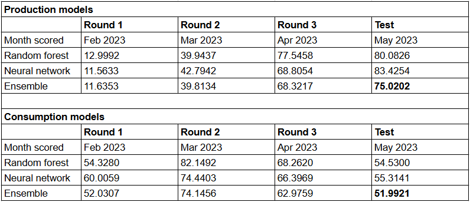
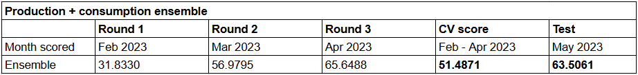
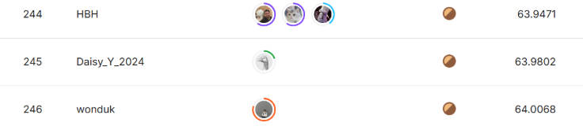

from numpy import randomrandom.seed(42)def nn_mae(preds, y): return torch.round((preds - y).abs().mean(), decimals=6)def mae(preds, y): returnround((preds-y).abs().mean(), 6)def m_mae(m, xs, y): return mae(m.predict(xs), y)class CrossValidate: is_partial =True# percent of currently known ids to drop (3 -> 4%, 4 -> 6%, 5 -> 7%, 6->9%, 7->10%) max_n_pids_to_drop =7 n_pids_drop = [] pids_to_drop = []# current for each round production_models =None production_ensemble_predictions =None consumption_ensemble_predictions =None valid_errors = [] cross_val_score =None train_dates = {'part': [pd.to_datetime('2022-11-01 00:00:00'), pd.to_datetime('2023-01-29 23:00:00')],'full': [pd.to_datetime('2022-01-01 00:00:00'), pd.to_datetime('2023-01-29 23:00:00')] } eval_dates = {'feb23': [pd.to_datetime('2023-02-01 00:00:00'), pd.to_datetime('2023-02-28 23:00:00')],'mar23': [pd.to_datetime('2023-03-01 00:00:00'), pd.to_datetime('2023-03-31 23:00:00')],'apr23': [pd.to_datetime('2023-04-01 00:00:00'), pd.to_datetime('2023-04-30 23:00:00')],'may23': [pd.to_datetime('2023-05-01 00:00:00'), pd.to_datetime('2023-05-31 23:00:00')] }def__init__(self, is_partial=True, max_n_pids_to_drop=7):self.is_partial = is_partialself.max_n_pids_to_drop = max_n_pids_to_dropreturndef _get_endpoints(self, features_df, eval_month:str):ifself.is_partial: train_dates_conds = [features_df['datetime'] ==self.train_dates['part'][0], features_df['datetime'] ==self.train_dates['part'][1] ]else: train_dates_conds = [features_df['datetime'] ==self.train_dates['full'][0], features_df['datetime'] ==self.train_dates['full'][1] ] train_endpoints = [features_df['datetime'][train_dates_conds[0]].index[0], features_df['datetime'][train_dates_conds[1]].index[-1] ] valid_dates_cond = [features_df['datetime'] ==self.eval_dates[eval_month][0], features_df['datetime'] ==self.eval_dates[eval_month][1] ] valid_endpoints = [features_df['datetime'][valid_dates_cond[0]].index[0], features_df['datetime'][valid_dates_cond[1]].index[-1] ]return train_endpoints, valid_endpointsdef _drop_pids_from_train(self, features_df, splits, pid_lookup_df): training_pids =set(features_df.iloc[splits[0]].merge(pid_lookup_df, how='left', on=['row_id'])['prediction_unit_id'].unique().tolist()) valid_pids =set(features_df.iloc[splits[1]].merge(pid_lookup_df, how='left', on=['row_id'])['prediction_unit_id'].unique().tolist()) intersection_pids =list(training_pids.intersection(valid_pids))# pids drop list may not be continuous or sorted. intersection_pids.sort() # drop from those not already missing in the valid fold, THIS ROUND.# to get the number of pids to drop THIS ROUND, pick a random int b/w 1 and the max allowed to drop. n_pids_drop = random.randint(3, self.max_n_pids_to_drop) # to get the pids to drop, index intersection_pids w/ a random int b/w 0 and its last index. repeat for the n_pids_drop chosen for THIS ROUND. pids_to_drop = [random.randint(0, len(intersection_pids)-1) for i inrange(n_pids_drop)]self.n_pids_drop.append(n_pids_drop)self.pids_to_drop.append(pids_to_drop)def _get_splits(self, features_df, val_round, pid_lookup_df):# val on feb23if val_round ==1: eval_month ='feb23' train_endpoints, valid_endpoints =self._get_endpoints(features_df, eval_month) train = features_df.iloc[train_endpoints[0]:train_endpoints[1]+1].index.tolist() valid = features_df.iloc[valid_endpoints[0]:valid_endpoints[1]+1].index.tolist() splits = (train, valid)# val on mar23elif val_round ==2: eval_month ='mar23' train_endpoints, valid_endpoints =self._get_endpoints(features_df, eval_month)# update train endpoints to include end of feb23 cond = features_df['datetime'] ==self.eval_dates['feb23'][1] # last datetime of feb23 train_endpoints[1] = features_df['datetime'][cond].index[-1] # last index of last datetime of feb23 train = features_df.iloc[train_endpoints[0]:train_endpoints[1]+1].index.tolist() valid = features_df.iloc[valid_endpoints[0]:valid_endpoints[1]+1].index.tolist() splits = (train, valid)# val on apr23elif val_round ==3: eval_month ='apr23' train_endpoints, valid_endpoints =self._get_endpoints(features_df, eval_month)# update train endpoints to include end of mar23 cond = features_df['datetime'] ==self.eval_dates['mar23'][1] # last datetime of mar23 train_endpoints[1] = features_df['datetime'][cond].index[-1] # last index of last datetime of mar23 train = features_df.iloc[train_endpoints[0]:train_endpoints[1]+1].index.tolist() valid = features_df.iloc[valid_endpoints[0]:valid_endpoints[1]+1].index.tolist() splits = (train, valid)# val on may23 (test)else: eval_month ='may23' train_endpoints, valid_endpoints =self._get_endpoints(features_df, eval_month)# update train endpoints to include end of apr23 cond = features_df['datetime'] ==self.eval_dates['apr23'][1] # last datetime of apr23 train_endpoints[1] = features_df['datetime'][cond].index[-1] # last index of last datetime of apr23 train = features_df.iloc[train_endpoints[0]:train_endpoints[1]+1].index.tolist() valid = features_df.iloc[valid_endpoints[0]:valid_endpoints[1]+1].index.tolist() splits = (train, valid)return splitsdef _setup_tabular_pandas(self, features_df, procs, max_card, splits, dep_var='target'): # variables cont, cat = cont_cat_split(features_df, max_card, dep_var=dep_var)# setup objectreturn TabularPandas(features_df, procs, cat, cont, y_names=dep_var, splits=splits) def _rf(self, to, n_estimators=40, max_features=0.5, min_samples_leaf=5, **kwargs):return RandomForestRegressor(n_jobs=-1, n_estimators=n_estimators, max_samples=int(0.5*len(to.train.xs)), max_features=max_features, min_samples_leaf=min_samples_leaf, oob_score=True).fit(to.train.xs, to.train.y)def _nn(self, to_nn, bs=1024, n_epochs=16, lr=1e-3):""" extrapolates up to np.ceil(y.max() * 2) """ dls = to_nn.dataloaders(bs) learn = tabular_learner(dls, y_range=(0, np.ceil(to_nn.train.y.max()*2)), layers=[500,250], n_out=1, loss_func=F.l1_loss) learn.fit_one_cycle(n_epochs, lr)return learn def cross_validate_merged(self, features_df, final_features, pid_lookup_df, valid_only):""" final_features = [production_features, consumption_features] """if valid_only: n_rounds =3else: n_rounds =4 valid_errors = []for val_round inrange(1, n_rounds+1):if val_round <4: print(f" ######## ROUND {val_round} ########\n")else:print(f" ######## ROUND {val_round} (TEST) ########\n")for i inrange(2): is_consumption_mask = features_df['is_consumption'] == i is_cons_df = features_df[is_consumption_mask] is_cons_df = is_cons_df.reset_index(drop=True)# generate pid mask tmp_splits =self._get_splits(is_cons_df, val_round, pid_lookup_df)self._drop_pids_from_train(is_cons_df, tmp_splits, pid_lookup_df) # appends local pids_to_drop to self.pids_to_drop (a list) pids_to_drop =self.pids_to_drop[val_round-1] # ensures the same pids dropped from production and consumption pid_mask = is_cons_df.iloc[tmp_splits[0]].merge(pid_lookup_df, how='left', on=['row_id'])['prediction_unit_id'].isin(pids_to_drop) valid_buffer = pd.Series(np.zeros(len(tmp_splits[1]), dtype='bool')) pid_mask = pd.concat([pid_mask, valid_buffer]) pid_mask.index = tmp_splits[0] + tmp_splits[1]# apply pid mask tmp_df = is_cons_df[final_features[i] + ['datetime', 'row_id', 'target']].iloc[tmp_splits[0]+tmp_splits[1]][~pid_mask] is_cons_df_final = tmp_df.reset_index(drop=True)[final_features[i] + ['datetime', 'target']] # need datetime for splits final_splits =self._get_splits(is_cons_df_final, val_round, pid_lookup_df) # re-compute the splits after applying pid_mask.del tmp_splits, tmp_df gc.collect() # RF procs = [Categorify, FillMissing] max_card =20 to =self._setup_tabular_pandas(is_cons_df_final[final_features[i] + ['target']], procs, max_card, final_splits)# NN procs_nn = [Categorify, FillMissing, Normalize] max_card_nn =9000 to_nn =self._setup_tabular_pandas(is_cons_df_final[final_features[i] + ['target']], procs_nn, max_card_nn, final_splits)# fitif i ==0:print(f"Fitting PRODUCTION models...\n")elif i ==1: print(f"Fitting CONSUMPTION models...\n")print(f"Random Forest...\n") m_rf =self._rf(to)print(f"Neural Network...\n") m_nn =self._nn(to_nn) # default 16 epochs # scoreprint("")print(f"-------- Scoring Random Forest --------")print("train mae: ", m_mae(m_rf, to.train.xs, to.train.y))print("valid mae: ", m_mae(m_rf, to.valid.xs, to.valid.y))print("oob mae: ", mae(m_rf.oob_prediction_, to.train.y))print("\n")print(f"-------- Scoring Neural Network --------") nn_preds, targs = m_nn.get_preds()print("nn valid mae: ", nn_mae(nn_preds, targs))print("\n")print(f"-------- Scoring Random Forest + Neural Network ensemble --------") rf_preds = m_rf.predict(to.valid.xs) ens_preds = (to_np(nn_preds.squeeze()) + rf_preds)/2 ens_mae = mae(ens_preds, to.valid.y) print("ens valid mae: ", ens_mae)print("\n")if i ==0:self.production_models = [m_rf, m_nn]self.production_ensemble_predictions = ens_predsif i ==1:self.consumption_models = [m_rf, m_nn]self.consumption_ensemble_predictions = ens_preds splits =self._get_splits(features_df, val_round, pid_lookup_df) valid_xs = features_df.iloc[splits[1]].drop(columns=['target']) valid_y = features_df.iloc[splits[1]]['target'] valid_xs['target'] = np.zeros(valid_xs.shape[0]) valid_xs.loc[valid_xs['is_consumption'] ==0, 'target'] =self.production_ensemble_predictions valid_xs.loc[valid_xs['is_consumption'] ==1, 'target'] =self.consumption_ensemble_predictions merged_ens_mae = mae(valid_xs['target'], valid_y)if val_round <4:self.valid_errors.append(merged_ens_mae)print(f"ROUND {val_round} Merged Ensemble MAE: {merged_ens_mae}\n")else:self.cross_validation_score = np.mean(self.valid_errors)print("Merged Ensemble Valid errors: ", self.valid_errors)print(f"Cross validation score: {self.cross_validation_score}")print(f"ROUND {val_round} (TEST) Merged Ensemble MAE: {merged_ens_mae}\n")print(f"n_pids dropped: {list(zip([i for i inrange(1, n_rounds+1)], self.n_pids_drop))}")print(f"pids dropped: {list(zip([i for i inrange(1, n_rounds+1)], self.pids_to_drop))}")return valid_xs, valid_y
In part 2 and part 3, we delved deeper into prosumers’ consumption and production behavior and carefully selected the most predictive features. In part 4, we’ll evaluate our models on varying partitions of the data to approximate how well they’ll hold up on new data.
To do this, I implemented a CrossValidate class (see code above) that performs 3-fold cross validation as described in part 1.
CPU times: user 2min 48s, sys: 12min 31s, total: 15min 20s
Wall time: 16min 23s
We will model production and consumption separately using random forest and neural network ensembles. Here are the final feature sets for production and consumption:
Each cross validation round, we fit production and consumption models and score them on their corresponding data, i.e. production models on production data, consumption models on consumption data. Finally, the two sets of ensembles are evaluated against the test set.
The cross validation results are summarized in the tables below. For details, see the cross validation log


2 Analysis
The validation errors increased each round as we approached the end of the available data. There was ultimately a ~23% difference between the cross validation score and the test score. Overfitting in both production and consumption models was markedly greater from round 2 onwards. However, the random forests’ OOB errors were not that different from the training errors. And unless we’ve missed something, we’ve handled data leakage too. Since the individual trees are not overfitting their training subsets that badly, something other than normal overfitting is driving the validation errors. All this in spite of the training data spanning more than 1 year and presumably capturing some trends, seasonality, and cycles.
These findings point to domain shift: the patterns underlying prosumers’ behavior have evolved over time. One known factor is rapidly increasing solar panel adoption by Enefit’s clients. Other external factors may include changes in weather patterns (perhaps over time horizons longer than 1 year) or government policy.
During the evaluation period, the models are re-trained online and scored as more new data is collected, so the competition’s test set spans data beyond May 2023, i.e. different from our test set. That said, our 63.5 score places in the top 10% (bronze medal range), which is an encouraging point to improve from.

Kaggle leaderboard snapshot
3 Next steps
This post concludes my series on this competition.
To go further, I would continue to experiment with:
new features: ratios between the lags, features that capture complex trends/seasonality/cycles with more granularity
new models: gradient-boosted decision trees (like LightGBM)